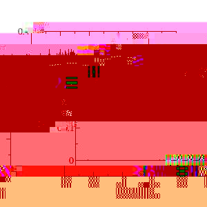

|
|
|
| Provide a freely available computer code to perform accurate and efficient DFT calculations on large, complex systems such as e.g. liquids, crystals, proteins and interfaces. Both static property calculations (such as spectra computed with TDDFT or as derivative properties of the total energy) and dynamical properties (e.g. diffusion, based on molecular dynamics) are possible. Shown on the left is a representation of the lowest unoccupied molecular orbital (LUMO) of a sample 256 water molecules (see also our picture gallery). Quickstep is a part of CP2K. Visit the CP2K homepage to download the code. |

| Maintaining good accuracy throughout is an important target, and a sequence of systematically improving basis sets for use with the Goedecker-Teter-Hutter pseudopotentials has been constructed. The picture on the left shows that nearly perfect agreement with a fully converged benchmark method (NUMOL) can be obtained. |

| Good efficiency can be obtained both in serial and in parallel on a wide range of architectures, including common desktop PCs. Shown on the left is are benchmark calculations on a Power4+ parallel supercomputer, where the time per MD step is shown for samples of liquid water (PBC) with a TZV2P basis set (a maximum of approx. 40000 basis functions) using high quality convergence settings. The dashed lines indicate ideal scaling. |
|  | Stable Born-Oppenheimer molecular dynamics can be performed efficiently, and a good conservation of the constant of motion is obtained. This is shown on the left for a 10ps NVE simulation of a sample of 64 water molecules at room temperature. The upper line is the ionic kinetic energy and the lower line is the constant of motion (total energy). |